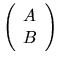

Next: Performance of LAPACK
Up: Computational Routines
Previous: Deflating Subspaces and Condition
Contents
Index
Generalized (or Quotient) Singular Value Decomposition
The generalized (or quotient) singular value decomposition
of an m-by-n matrix A and a p-by-n matrix B is described
in section 2.3.5.
The routines described in this section, are used
to compute the decomposition. The computation proceeds in the following
two stages:
- 1.
- xGGSVP is used to reduce the matrices A and B to triangular form:
where A12 and B13 are nonsingular upper triangular, and
A23 is upper triangular.
If m-k-l < 0, the bottom zero block of U1T A Q1 does not appear,
and A23 is upper trapezoidal.
U1, V1 and Q1 are
orthogonal matrices (or unitary matrices if A and B are complex).
l is the rank of B, and
k+l is the rank of
.
- 2.
- The generalized singular value decomposition of two l-by-l
upper triangular matrices A23 and B13 is computed using
xTGSJA2.2:
Here U2, V2 and Q2 are orthogonal (or unitary) matrices,
C and S are both real
nonnegative diagonal matrices satisfying C2 + S2 = I, S is nonsingular,
and R is upper triangular and nonsingular.
Table 2.16:
Computational routines for the generalized singular value decomposition
| Operation |
Single precision |
Double precision |
| |
real |
complex |
real |
complex |
| triangular reduction of A and B |
SGGSVP |
CGGSVP |
DGGSVP |
ZGGSVP |
| GSVD of a pair of triangular matrices |
STGSJA |
CTGSJA |
DTGSJA |
ZTGSJA |
The reduction to triangular form, performed by
xGGSVP, uses QR decomposition with column pivoting
for numerical rank determination. See [8] for details.
The generalized singular value decomposition of two
triangular matrices, performed by xTGSJA, is done
using a Jacobi-like method as described in [83,10].
Next: Performance of LAPACK
Up: Computational Routines
Previous: Deflating Subspaces and Condition
Contents
Index
Susan Blackford
1999-10-01